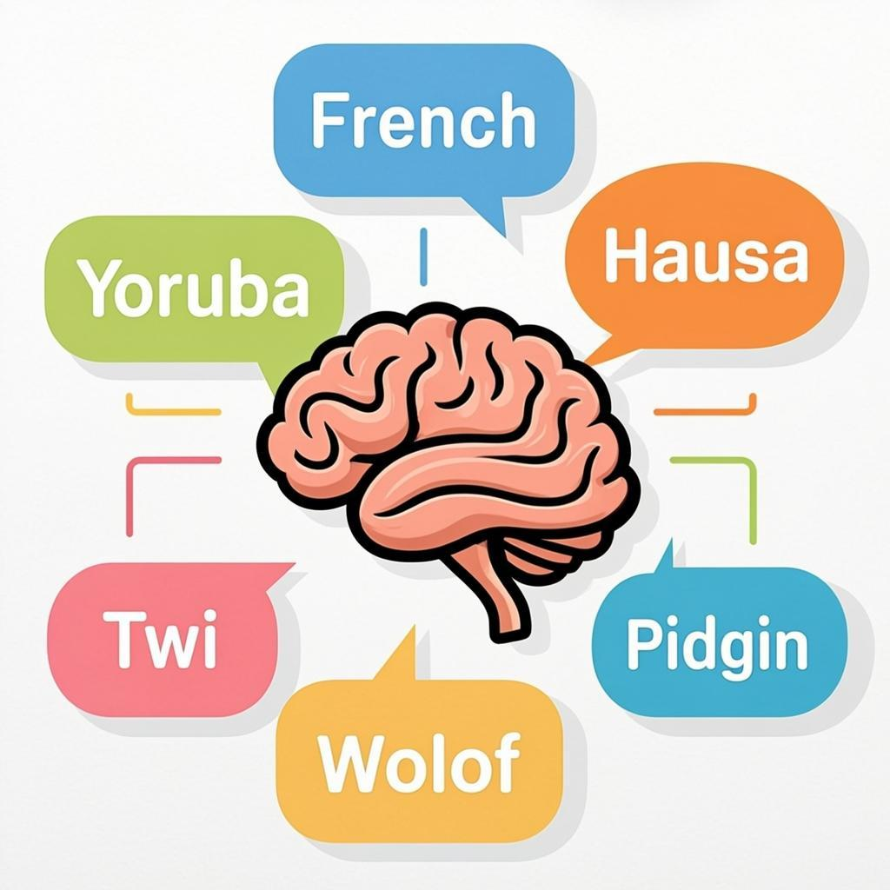

The Problem
400 Million People, Shut Out of Their Own Education
Across West Africa — from the bustling streets of Lagos to the rural communities of Burkina Faso, from the coastal cities of Accra to the inland markets of Kano — over 400 million people speak hundreds of indigenous languages and creoles. Pidgin English flows through Nigerian markets as the lingua franca of commerce. Yoruba proverbs carry centuries of wisdom in southwestern Nigeria. Wolof greetings shape daily life in Senegal. Twi expressions capture emotions that English simply cannot.
Yet when a student in Ibadan opens a Physics textbook, every word is in English. When a teacher in Kumasi tries to explain photosynthesis, the curriculum demands French or English terminology. When an adult learner in Dakar wants to understand basic accounting, the only available resources are in colonial languages that many struggle with. This is not just an inconvenience — it is a systematic barrier to education that perpetuates inequality across generations.
Young learners across West Africa deserve education in their own languages
Teachers struggle with materials that ignore their students' mother tongues
400M+
People speak vernacular languages across West Africa
500+
Indigenous languages with zero educational content
60%
Higher retention when learning in one's mother tongue
"If you want to kill a people, kill their language. Education that does not speak to a child in their mother tongue is not education — it is assimilation."
The Solution
Smarts Lever: Learn Anything, In Your Language
Smarts Lever is an AI-powered education platform that takes complex academic subjects and breaks them down into engaging, understandable lessons delivered in the learner's own vernacular language. Using Google's Gemini AI, the platform dynamically generates entire curricula adapted to each learner's language, cultural context, education level, and personal background — complete with local slang, cultural references, real-life analogies, and academic citations.
Imagine learning Physics and your lesson explains gravity using the analogy of a Lagos danfo (bus) braking suddenly — "When danfo driver jam brake, everybody inside go slide forward. Na the same thing gravity dey do to everything wey get mass." This is not dumbed-down content; it is intelligent, culturally-rooted pedagogy that makes knowledge stick because it connects to what the learner already knows and lives every day.

Smarts Lever bridges the gap between 500+ West African languages and quality education
The platform serves individuals (students, self-learners, curious minds), teachers (who need vernacular teaching materials), schools (looking to supplement their curriculum), government agencies (developing public education programs), and NGOs (running community education initiatives). Every user gets a personalized experience tailored to their specific context and needs.
Key Features
What Makes Smarts Lever Different
Vernacular-First Teaching
All lesson content is generated in the learner's chosen language — Pidgin, Yoruba, Hausa, Igbo, Twi, Wolof, Fanti, Bambara, and 15+ more. Slang and informal expressions are woven naturally into explanations, making complex concepts feel like a conversation with a knowledgeable friend.
AI-Powered Curriculum Generation
Google Gemini 2.0 Flash creates structured, progressive curricula from the learner's profile. Each curriculum is broken into modules and lessons with proper sequencing, prerequisites, and difficulty progression — all in the learner's language.
References and Citations
Every lesson includes proper academic references and citations, maintaining scholarly credibility. The platform bridges informal vernacular explanation with formal academic standards, proving that local languages can carry rigorous intellectual content.
Adaptive AI Tutor Chat
A built-in conversational AI tutor that answers questions in the learner's vernacular, knows their current lesson context, and adjusts explanations based on their learning history. It's like having a patient tutor available 24/7 who speaks your exact language.
Progressive Profiling
The platform periodically asks contextual questions during learning to refine the user's profile. As it learns more about the learner's background, it adjusts teaching complexity, language style, and cultural references for increasingly personalized content.
How It Works
Five Steps to Learning In Your Language
1
Sign Up
Register with email or Google Sign-In. Takes 30 seconds.
2
Build Profile
5-step AI-guided onboarding captures your language, location, and subjects.
3
Get Curriculum
Gemini AI generates a personalized curriculum in your vernacular.
4
Learn
Engage with lessons, slang notes, references, and real-life examples.
5
Ask & Grow
Chat with the AI tutor, track progress, and deepen understanding.
A young learner in Lagos uses Smarts Lever on her phone during her daily commute
Language Coverage
Speaking to West Africa In Its Own Voice
Smarts Lever supports 15+ West African languages and creoles out of the box, with the ability to add any custom language a user specifies. The platform does not just translate English content — it generates original explanations that reflect how concepts would be naturally discussed in each language, incorporating local idioms, proverbs, and ways of understanding the world.
| Language | Primary Countries | Speakers (est.) |
|---|---|---|
| Pidgin English | Nigeria, Ghana, Cameroon | 75 million+ |
| Yoruba | Nigeria, Benin, Togo | 45 million+ |
| Hausa | Nigeria, Niger, Ghana | 80 million+ |
| Wolof | Senegal, Gambia, Mauritania | 12 million+ |
| Twi | Ghana, Cote d'Ivoire | 11 million+ |
| Fanti | Ghana | 3 million+ |
| Igbo | Nigeria | 30 million+ |
| Bambara | Mali, Burkina Faso, Senegal | 15 million+ |
| Ewe | Ghana, Togo | 7 million+ |
| Fulfulde | Nigeria, Senegal, Guinea, Mali | 25 million+ |
Technology
Built With Modern, Scalable Tools
Smarts Lever is built on a modern web stack designed for rapid development and production reliability. The frontend is a Next.js 16 single-page application using TypeScript, Tailwind CSS 4, and shadcn/ui components for a professional, responsive interface. State management is handled by Zustand, with smooth transitions powered by Framer Motion. Authentication uses NextAuth.js with Google OAuth integration.
The backend relies on Prisma ORM with SQLite for local data persistence and Supabase for cloud database and real-time features. The AI engine is powered by Google Gemini 2.0 Flash, which generates curricula, lesson content, and chat responses — all intelligently adapted to the learner's vernacular language and cultural context. Media assets are handled by Cloudinary, and transactional emails by Resend.
Next.js 16
TypeScript 5
Tailwind CSS 4
shadcn/ui
Prisma ORM
NextAuth.js
Zustand
Framer Motion
Google Gemini 2.0
Supabase
Cloudinary
Resend
Social Impact
Education That Changes Lives at Scale
SDG 4: Quality Education
Smarts Lever directly contributes to the United Nations Sustainable Development Goal 4: Quality Education by addressing the fundamental barrier of language exclusion in education across West Africa. Research consistently shows that children and adults learn better, retain more, and engage more deeply when educational content is delivered in their mother tongue or primary language of daily use.
Removing Language Barriers
For the first time, a student in a rural village in Oyo State can learn Physics in Yoruba with the same rigor as a student in London learning in English. The platform eliminates the linguistic gatekeeping that has kept millions from accessing quality education.
Preserving Indigenous Languages
By integrating vernacular languages into formal educational contexts, Smarts Lever helps preserve and elevate languages that are at risk of being lost. It sends a powerful message: your language is not inferior — it is capable of carrying the full weight of human knowledge.
Empowering Teachers and Schools
Teachers in under-resourced schools across West Africa gain access to a library of culturally relevant teaching materials. Schools can adopt the platform to supplement their curriculum with content that actually speaks to their students' lived experiences.
Bridging the Rural-Urban Divide
A student in a rural community with only a smartphone and internet access gets the same quality of personalized, vernacular education as a student in an elite urban school. This platform levels the playing field in a way that traditional educational infrastructure simply cannot.
Market Potential
A Continent-Wide Opportunity
West Africa's education technology market is projected to reach $4.2 billion by 2028, driven by increasing smartphone penetration (now over 50% across the region), growing internet access, and a young population hungry for knowledge. Nigeria alone has over 200 million people, with 60% under the age of 25. Ghana, Senegal, Cote d'Ivoire, and other West African nations show similar demographic trends.
Smarts Lever is uniquely positioned to capture this market because it addresses a need that no existing platform serves: vernacular-language education at scale. While competitors like Coursera, Udemy, and Khan Academy offer world-class content, they do so exclusively in English, French, or other colonial languages. Smarts Lever fills the massive gap between the language people speak and the language education is offered in.
$4.2B
Projected EdTech market in West Africa by 2028
200M+
Nigeria's population, 60% under 25
16
West African countries as primary market
Partnership
Why Wema Bank Should Back Smarts Lever
Wema Bank has built a reputation as one of Nigeria's most innovative financial institutions, particularly through its ALAT digital banking platform and its commitment to fostering innovation through Hackaholics. Smarts Lever aligns perfectly with Wema Bank's values of inclusion, innovation, and social impact — the platform literally brings education to people who have been excluded from it due to language barriers.
Beyond the hackathon, Smarts Lever represents a scalable social enterprise that could serve as a flagship impact project for Wema Bank's CSR portfolio. The platform demonstrates that AI can be deployed not just for commercial gain but for genuine social good — a narrative that strengthens Wema Bank's brand as a bank that cares about the communities it serves. With 400 million potential users across West Africa and a technology stack built for scale, the impact potential is enormous.